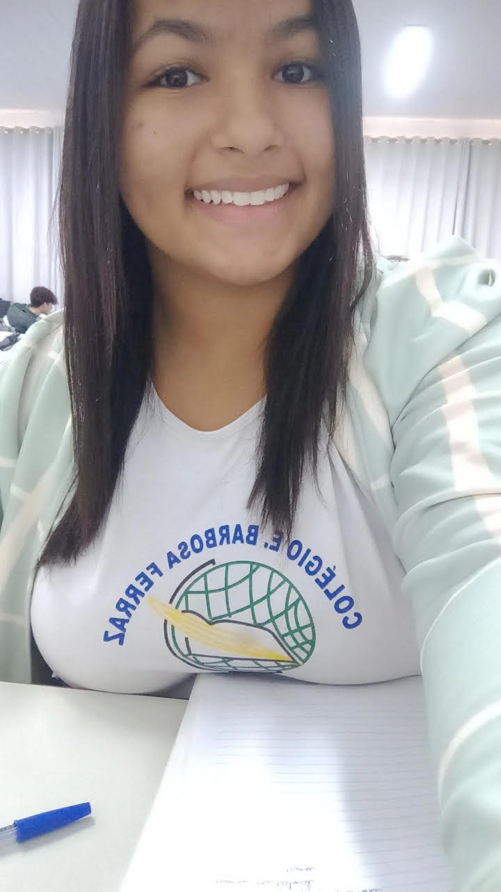

Sou uma pessoa extrovertida, adoro viagens principalmente ir à praia com os meus pais.
Nome: Nicoly
Idade: 16 anos
Trabalho na padaria do meu pai ás vezes.
Faço altas habilidades no colégio, para fazer projetos para feira cientificas
Meu objetivo é aprender coisas novas todo dia, para apprimorar
meu conhecimento sobre assuntos que me interessam
Voltar